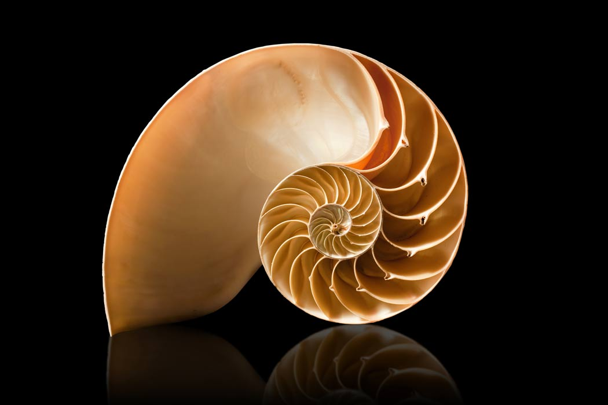

Golden Ratio
"We can say, then, that the randomness of a dérive is fundamentally different from that of the stroll,
but also that the first psychogeographical attractions discovered by dérivers may tend to fixate them around new habitual axes,
to which they will constantly be drawn back."
Fibonnaci squence can be found in art or film as well, however, it may be known as the golden ratio.
We are immediately drawn to an axis followed
by the stroll of what surrounds it, eventually leading back to the center.
Next Stop